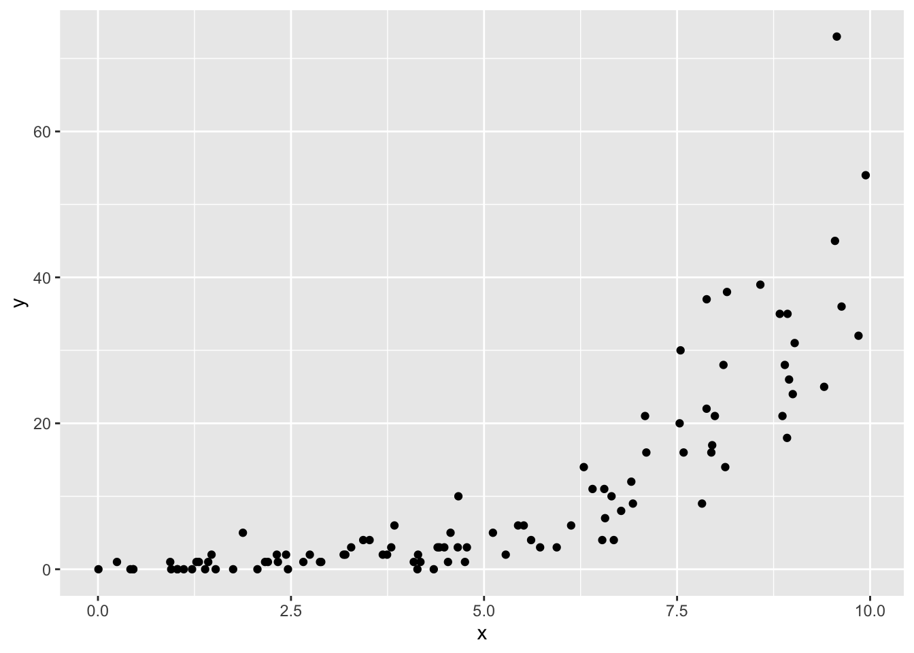

qchisq(0.95, 1)[1] 3.841459This lab will guide you through running the likelihood ratio test to calculate and interpret \(P\)-values. You can download the template .qmd file for this lab here:
The template will prompt you to work through the following sections.
Imagine two nested models like these:
\[ \begin{aligned} \log(\mu)_{full} &= b_0 + b_1 x \\ \log(\mu)_{0} &= b_0 + 0 \times x \\ \end{aligned} \]
This situation looks like we are setting up a likelihood ratio test, and indeed we could calculate
\[ \begin{aligned} \Lambda &= 2(\log\mathscr{L}_{full} - \log\mathscr{L}_0) \end{aligned} \]
Suppose that \(\Lambda = 4\). With \(d.f. = 1\) we would reject the null of no predictive difference between the models. We would reject the null because 4 is greater than the critical value for a \(\chi^2\) distribution with \(d.f. = 1\) at a \(P\)-value cut off of 0.05. The critical value is
qchisq(0.95, 1)[1] 3.841459Which is indeed less than 4.
The choice to force \(b_1 = 0\) is helpful for this null hypothesis test. But we could equally well calculate a likelihood ratio while forcing \(b_1\) to take some other value. For example, suppose that our maximum likelihood estimate for \(b_1\) is \(\hat{b_1} = 0.5\). What would \(\Lambda\) be if we compared the full model to a “reduced” model where we forced \(b_1 = 0.4\)? Would \(\Lambda\) still be greater than 3.841? Perhaps not. Incidentally, the relevant \(\chi^2\) distribution here still has \(d.f. = 1\) because, while we are not forcing \(b_1 = 0\) we are still constraining it to one fixed value.
This though exercise motivates one approach to calculating confidence intervals for parameter estimates. If we could find all values to set as the fixed value of \(b_1\) such that
\[ \begin{aligned} 3.48 &\geq 2(\log\mathscr{L}_{full} - \log\mathscr{L}_{fixed}) \end{aligned} \]
we would find all parameter estimates of \(b_1\) that are statistically equivalent at the 0.05 significance levels. Put another way, we would find all parameter values that would make models that would fail to reject the null. All such parameter values form a 95% confidence interval.
Rearranging the math a little we can begin to see how to arrive at such a confidence interval
\[ \begin{aligned} 3.48 &\geq 2(\log\mathscr{L}_{full} - \log\mathscr{L}_{fixed}) \\ \frac{3.48}{2} &\geq \log\mathscr{L}_{full} - \log\mathscr{L}_{fixed} \\ \log\mathscr{L}_{fixed} &\geq \log\mathscr{L}_{full} - \frac{3.48}{2} \end{aligned} \]
So to find the confidence intervals we need to find all values of \(b_1\) such that \(\log\mathscr{L}_{fixed}\) is within \(3.48 / 2 = 1.74\) of the peak of the likelihood function for the full model. The likelihood function for a model with a fixed value \(\log\mathscr{L}_{fixed}\) is called the profile likelihood because we use it to just look at one profile (one dimension) of the higher dimensional likelihood surface.
To see how this works, let’s make a simple toy data set
# set random number generator seed so we all have
# the same simulated data
set.seed(123)
x <- runif(100, 0, 10)
mu <- exp(-1 + 0.5 * x)
y <- rnbinom(length(x), mu = mu, size = 8)
toy_dat <- data.frame(x, y)Let’s visualize these toy data
ggplot(toy_dat, aes(x, y)) +
geom_point()
And make a full model
toy_mod_full <- glm.nb(y ~ x, data = toy_dat)The coefficients are
# close to the values we used for simulating
coefficients(toy_mod_full)(Intercept) x
-1.0946459 0.5110033 and the peak of the log likelihood function for the full model is
logLik(toy_mod_full)'log Lik.' -232.9425 (df=3)To look at the profile likelihood function, and ultimately use it to find a confidence interval, we need to be able to calculate the log likelihood of the model
\[ \log(\mu) = b_0 + b_1 x \]
where we fix the value of \(b_1\) to some value of our choosing, say 0.4. We can fit such a model (with a fixed value of \(b_1\)) using the offset function
toy_mod_fixed <- glm.nb(y ~ 1 + offset(0.4 * x), data = toy_dat)
logLik(toy_mod_fixed)'log Lik.' -243.891 (df=2)The offset allows there to be a slope with fixed value rather than the glm.nb function trying to find the maximum likelihood estimate for the slope.
But our goal is not to look at just one value for the slope, our goal is to look at many and find the ones such that \(\log\mathscr{L}_{fixed} \geq \log\mathscr{L}_{full} - 1.74\). For such a goal we again need a for loop.
Complete this code:
# note: be sure to switch `eval` to `true`
# range of b_1 values to consider
b1_vec <- seq(0.44, 0.58, length.out = 500)
# vector to hold profile log likelihoods
prof_ll <- numeric(length(b1_vec))
# loop over b_1 values (this will be a little slow)
for(i in 1:length(b1_vec)) {
# make model with an offset representing fixed slope b1_vec[i]
# calculate log likelihood of model and store in `prof_ll`
}Once completed, make a visualization of your profile likelihood. You will need to combine b1_vec and prof_ll into a data.frame. Add a column for which values of prof_ll are \(\geq \log\mathscr{L}_{full} - 1.74\) and use that column to color code the points.
Finally compute the range of values b1_vec for which prof_ll is \(\geq \log\mathscr{L}_{full} - 1.74\)
# note: be sure to switch `eval` to `true`
# be more exact with qchisq
b1_vec[prof_ll >= logLik(toy_mod_full) - qchisq(0.95, 1) / 2] |>
range()And compare to the output of confint. They should be quite close, but the values of b1_vec will be more of an approximation because we only evaluated the profile likelihood function at 500 points while the output of confit has a much finer resolution
confint(toy_mod_full)Waiting for profiling to be done... 2.5 % 97.5 %
(Intercept) -1.4505777 -0.7549214
x 0.4649065 0.5590144Return to the model of species richness you’ve been working on. Visualize the profile likelihood for the slope of one explanatory variable. Compare this “by hand” approach with the output of confint.